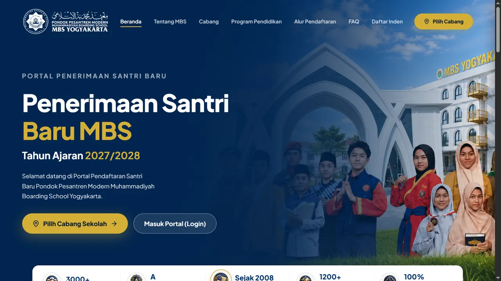
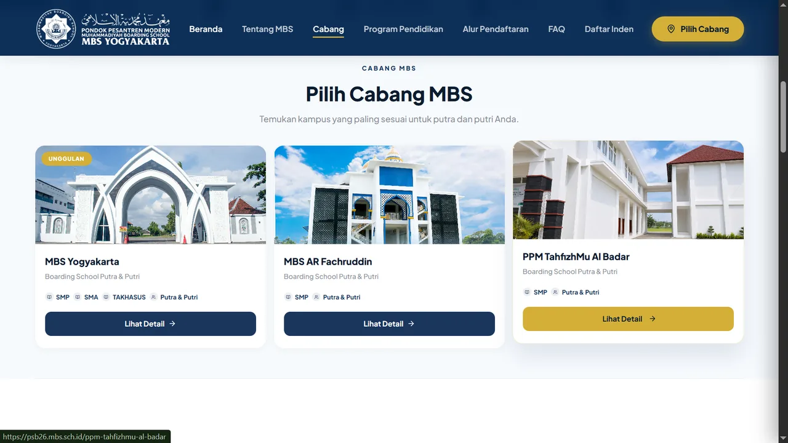
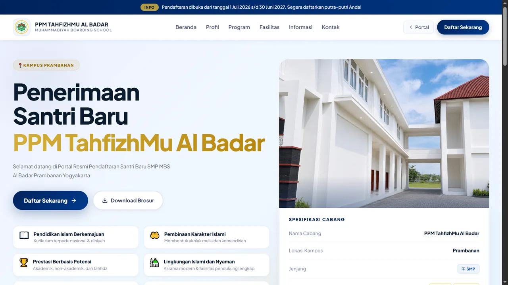
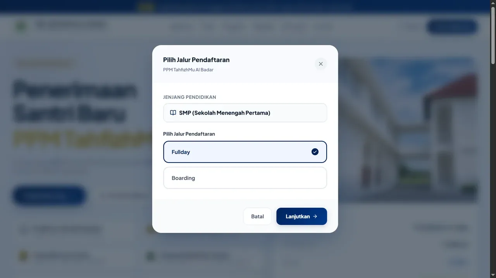
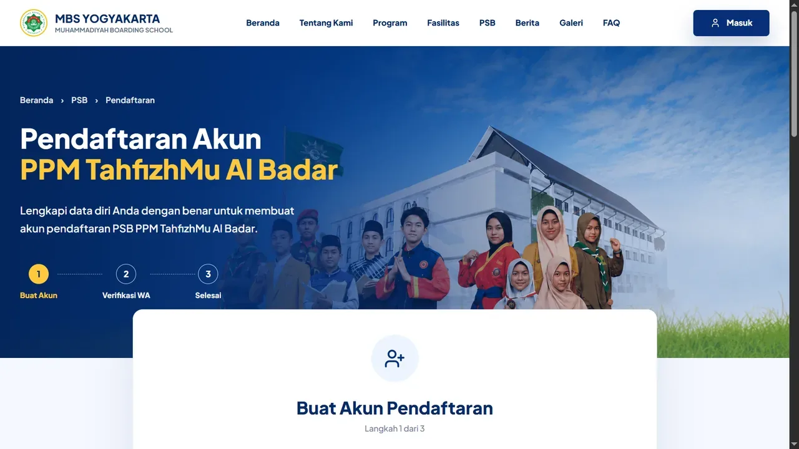

Penerimaan Peserta Didik Baru
SMP MBS AL BADAR Prambanan
Seluruh proses pendaftaran dilakukan melalui Portal PSB Resmi. Halaman ini membantu Anda memahami setiap langkah sebelum memulai pendaftaran.
Seluruh Proses Dilakukan Melalui Portal PSB
Website SMP MBS AL BADAR Prambanan hanya berfungsi sebagai media informasi dan panduan pendaftaran. Setelah Anda menekan tombol Daftar PPDB, seluruh proses berikutnya dilakukan melalui Portal PSB Resmi yang digunakan oleh Muhammadiyah Boarding School.
Langkah-Langkah Pendaftaran
Klik Tombol "Daftar PPDB"
Klik tombol Daftar PPDB pada halaman ini. Website akan membuka Portal PSB Resmi (https://psb.mbs.sch.id) pada tab baru.
Catatan: Seluruh proses pendaftaran berikutnya dilakukan melalui Portal PSB Resmi.
Pilih Cabang Sekolah
Setelah Portal PSB terbuka, Anda akan melihat beberapa pilihan cabang sekolah Muhammadiyah Boarding School (MBS).
Pilih PPM TahfizhMu Al Badar Prambanan sebagai cabang tujuan pendaftaran untuk melanjutkan ke tahap berikutnya.

Pilih SMP MBS AL BADAR Prambanan
Pada halaman berikutnya akan ditampilkan pilihan unit pendidikan yang tersedia pada cabang tersebut.
Pilih SMP MBS AL BADAR Prambanan untuk melanjutkan proses pendaftaran.
Note: Pendaftaran saat ini diperuntukkan bagi calon siswa Kelas VII untuk Tahun Ajaran 2027/2028.

Klik "Daftar Sekarang"
Setelah memilih SMP MBS AL BADAR Prambanan, klik tombol Daftar Sekarang untuk memulai proses pendaftaran pada Portal PSB.
Tahap ini akan membawa Anda ke pilihan program pendidikan yang tersedia.

Pilih Program Pendidikan
Pilih salah satu program pendidikan yang sesuai dengan kebutuhan calon peserta didik. Pilihan yang tersedia:
- SMP Boarding
- SMP Full Day
Setelah memilih program, lanjutkan ke tahap pendaftaran berikutnya.

Lengkapi Data Pendaftaran
Pada tahap ini seluruh proses pendaftaran dilakukan melalui Portal PSB Resmi.
Silakan mengikuti alur yang telah disediakan oleh sistem, mulai dari membuat akun, mengisi data calon peserta didik, melengkapi data orang tua, serta informasi lain yang diperlukan hingga proses pendaftaran selesai.
Pastikan seluruh data yang dimasukkan sudah benar sebelum mengirimkan formulir pendaftaran.

Layanan Proses Cepat (2 Week Service)
SMP MBS AL BADAR Prambanan menerapkan sistem layanan cepat (2 Week Service). Setelah seluruh data dan persyaratan dinyatakan lengkap, panitia akan segera memproses tahapan administrasi tanpa harus menunggu pembukaan gelombang tertentu.
Catatan: Lama proses dapat berbeda menyesuaikan kelengkapan data dan tahapan seleksi.
Persyaratan Dokumen
Dokumen yang diperlukan akan diinformasikan secara lengkap pada Portal PSB sesuai jalur dan program yang dipilih.
Pertanyaan Umum
Tidak. Seluruh proses pendaftaran awal dilakukan secara online melalui Portal PSB. Anda hanya perlu datang ke sekolah jika diperlukan untuk tes wawancara atau verifikasi dokumen final pada tahap selanjutnya.
Pastikan Anda menggunakan email aktif dan koneksi internet stabil. Jika kendala tetap berlanjut, silakan hubungi panitia PPDB kami melalui WhatsApp yang tertera di halaman ini.
Anda dapat menggunakan fitur "Lupa Password" yang tersedia di halaman login Portal PSB. Tautan reset akan dikirimkan ke email yang Anda daftarkan.
Ya. Sistem Portal PSB secara otomatis menyimpan progress isian Anda. Anda dapat keluar, lalu login kembali menggunakan akun yang sama untuk melanjutkan proses pendaftaran.
Anda tetap dapat membuat akun dan mengisi biodata. Namun, proses seleksi baru akan dimulai (2 Week Service) setelah seluruh dokumen persyaratan berhasil diunggah dan dinyatakan lengkap oleh sistem.
Siap Memulai Pendaftaran?
Portal PSB akan dibuka pada tab baru. Pastikan Anda telah menyiapkan dokumen yang diperlukan sebelum memulai proses pendaftaran.